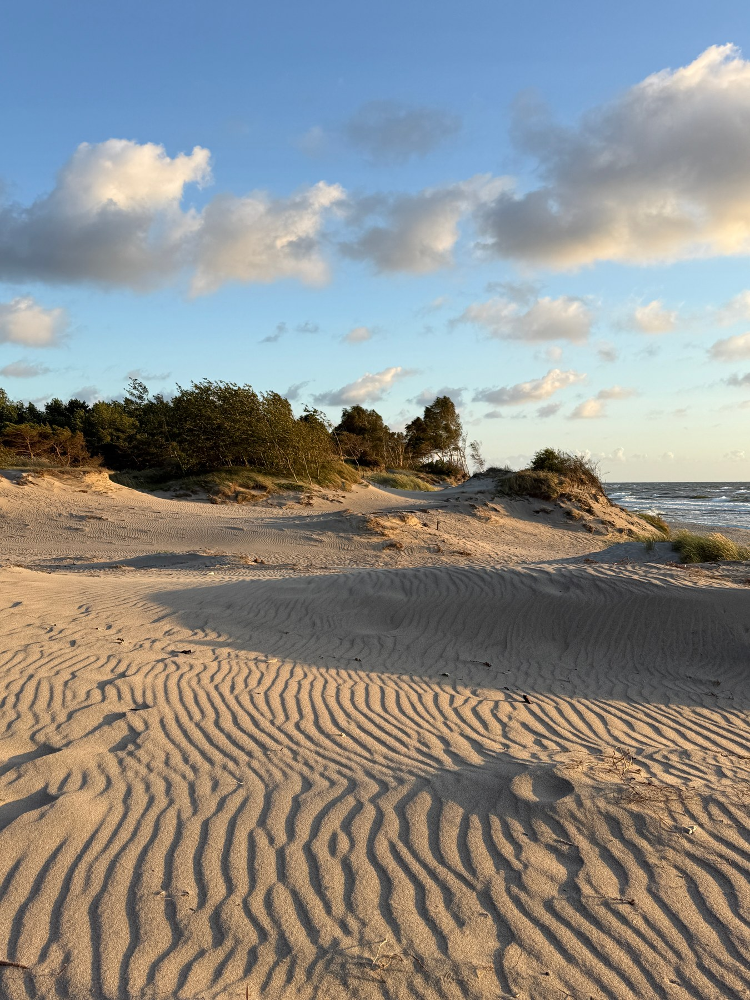
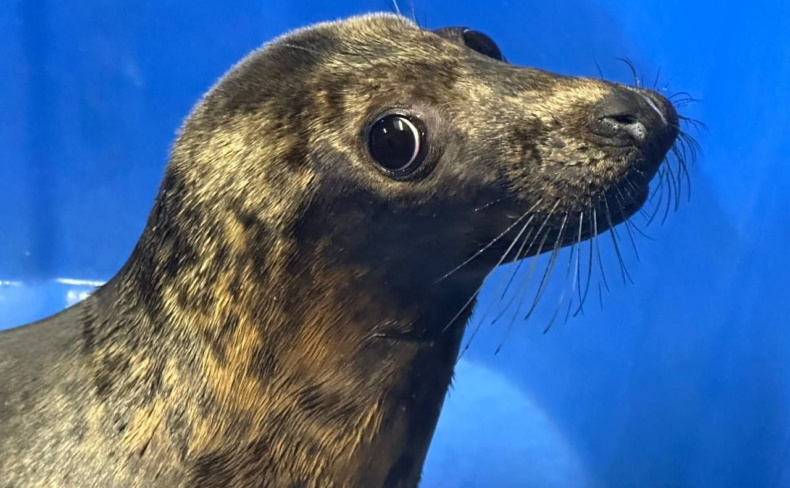
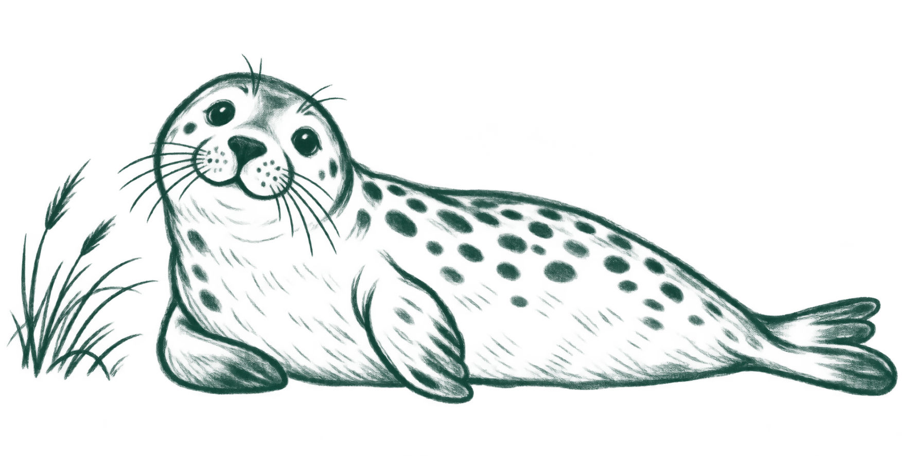
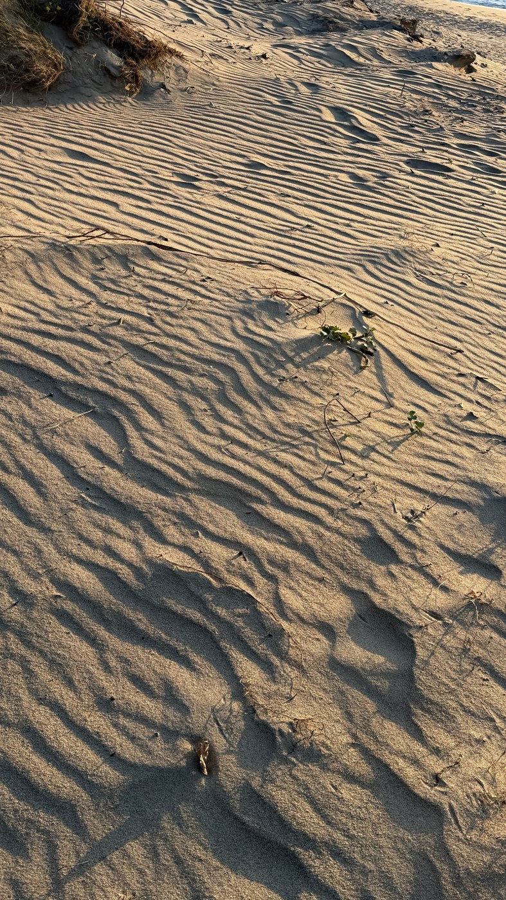
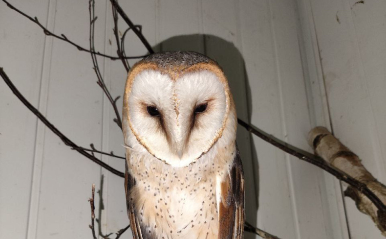
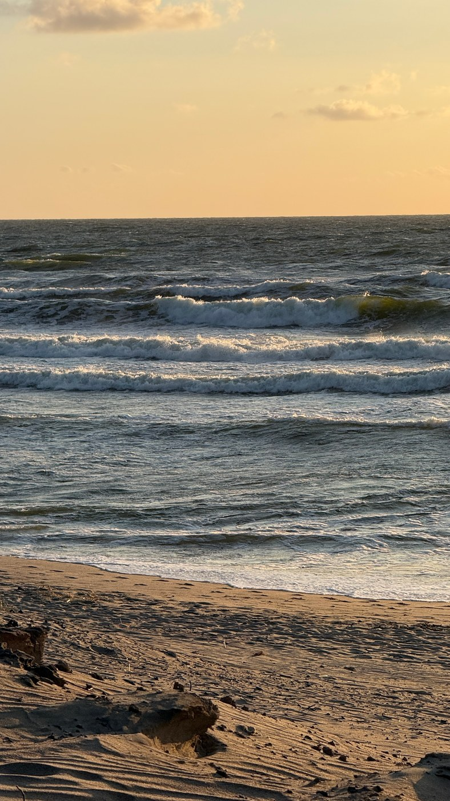

КАЛИНИНГРАДСКАЯ ОБЛАСТЬ · ЛЮДИ И ПРИРОДА
Балтика — дом.
Для каждого.
Для тех, кто летает над дюнами,
прячется в траве и возвращается в море.
Поможем тем, кто здесь живёт. Поддержите людей, которые заботятся о диких животных Балтики.
Выбрать способ помощиБольшая забота начинается с маленького шага.



БЕРЕЖНОЕ ОТНОШЕНИЕ — В ДЕЛАХ
У природы нет голоса.
Но есть мы.
«Биосфера Балтики» помогает диким животным в Калининградской области: принимает на реабилитацию птиц и млекопитающих, заботится о них и помогает вернуться в природу.
Познакомиться с работой центра ↗


МОЖНО НАЧАТЬ СЕГОДНЯ
Помощь начинается
с малого.
У каждого есть свой способ быть рядом.
Выберите тот, который подходит вам.
Нашли животное, которому нужна помощь?
Связаться с центром ↗